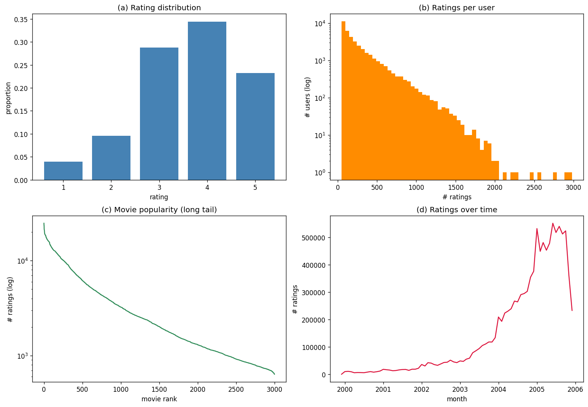

A four-model recommendation system with explainable Top-K recommendations
Mayank Kumar Agrawal · 23323021 | Open Projects 2026 · IIT Roorkee · PS1
Dense signal favours latent-factor models; the long tail demands attention to coverage for genuine discovery.

Top 3,000 movies × 40,000 active users → 10.7M ratings @ 8.92% density. Temporal 80/20 split (predict each user's most recent ratings). Relevance ≥ 3.5.
| Model | RMSE ↓ | MAP@10 ↑ | NDCG@10 ↑ | Coverage ↑ | train (s) |
|---|---|---|---|---|---|
| Bias baseline | 0.9039 | 0.0364 | 0.0731 | 0.015 | 0.7 |
| Item-based CF | 0.8838 | 0.0658 | 0.1223 | 0.810 | 1.6 |
| Matrix Factorization (SVD) | 0.8611 | 0.0720 | 0.1266 | 0.139 | 5.9 |
| Neural CF | 0.8419 | 0.0423 | 0.0817 | 0.351 | 9.7 |
Hit Rate@10 = 44.5% of users get ≥1 correct Top-10 recommendation; every pick carries a human-readable reason.